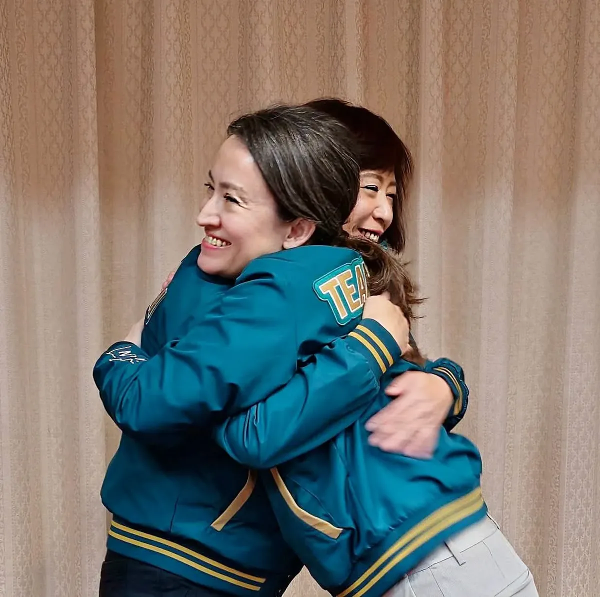
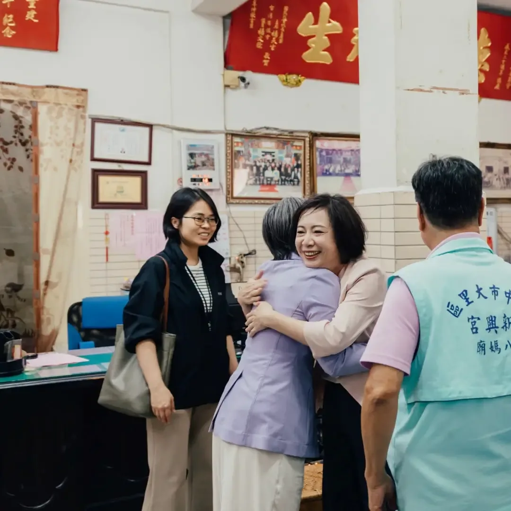
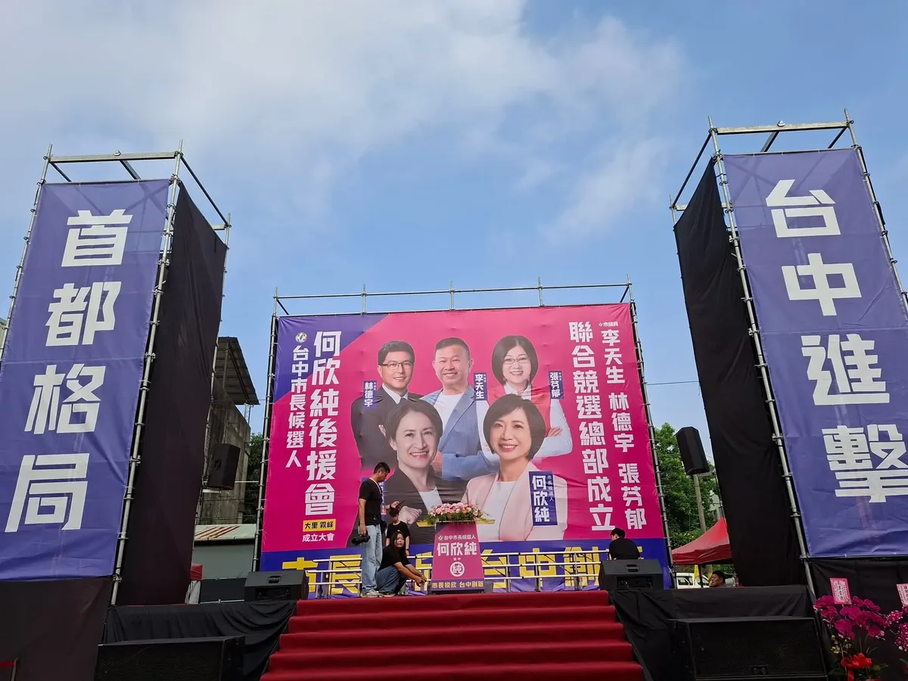
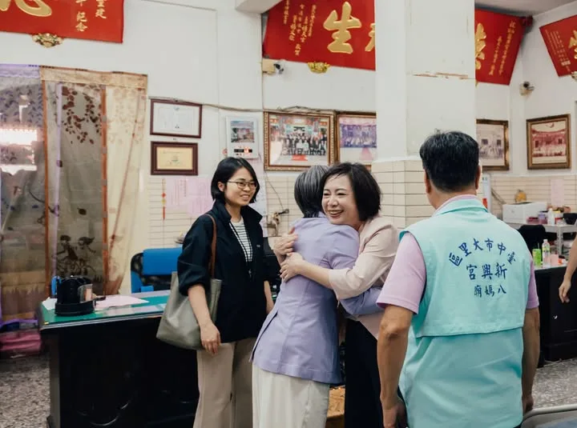
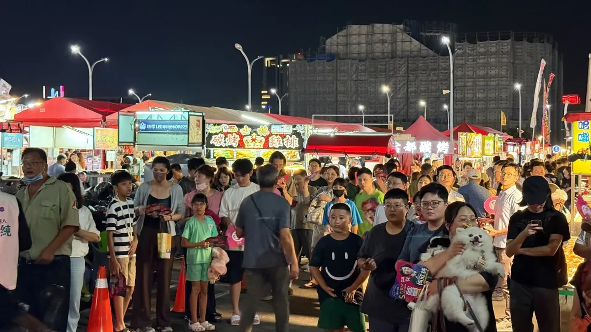
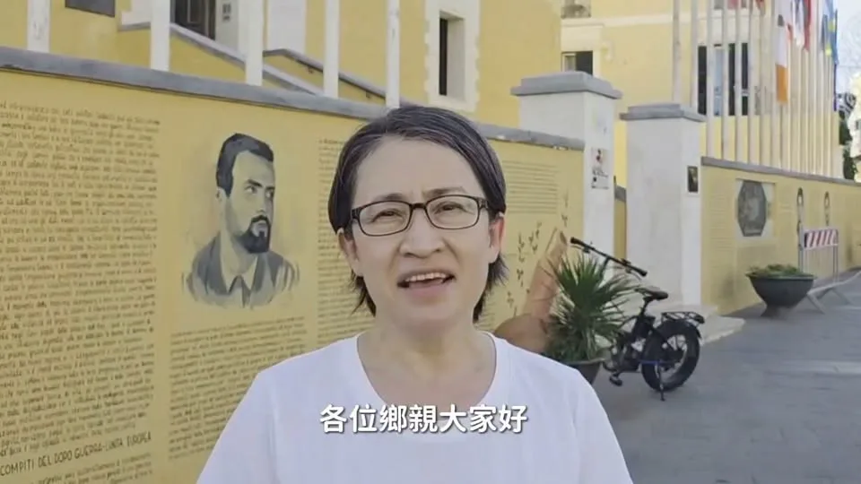

新台中，欣市長！汗水裡，有我流下來的眼淚.....拜託大家、拜託大家、拜託大家，用懇請拜託的心，這一次我們衝過關，屯區一定要出一個市長！
Accounts
| 平台 | 帳號 | 已收錄貼文 | 最後更新 |
|---|---|---|---|
| 官網 | https://a-chun.tw/ | 43 | 2026-09-18 13:00 |
| https://www.facebook.com/94achun/ | 133 | 2026-09-20 12:01 | |
| https://www.instagram.com/a_chun1973/ | 96 | 2026-09-19 21:20 | |
| Threads | https://www.threads.com/@a_chun1973 | 158 | 2026-09-20 15:27 |
| YouTube | https://www.youtube.com/channel/UCFcDN6t7tJ7qObwtyBQHdRg | 157 | 2026-09-20 15:31 |
| LINE 官方帳號 | https://page.line.me/beu1231o | 0 | — |
Timeline
顯示 587 / 587 則
新台中，欣市長！汗水裡，有我流下來的眼淚.....拜託大家、拜託大家、拜託大家，用懇請拜託的心，這一次我們衝過關，屯區一定要出一個市長！
咱台中也要起風！何欣純海線大進擊


@a_chun1973:好姐妹大大的擁抱，好開心、好感激，歡迎 美琴 副總統來到台中！
首都格局 台中進擊！台中市長候選人何欣純大里、霧峰後援會成立大會
早安！我們等下見！！ 🕤️時間：9／19（六）上午9：30 🌏️地點：大里新興宮（八媽廟) 大里區新仁路2段162號
等我嗎？ 我來了！ 謝謝你們願意等待何欣純！❤ 🌊欣潮 💫追欣族🍄何鮮菇 🫶台中純派 #台中北屯總站夜市😘😘

@a_chun1973:美琴好姊妹 明天我們台中見！
今天，我和屯區議員共同提出 #六星新屯區 政策願景，從交通、產業、生活到青年文化，推動屯區全面升級！ 📌 捷運建設大進擊 藍線延伸太平、橘線加速推進、屯區環狀紫線加速核定。 📌 公路交通大進擊 改善中投公路、台74線及太平市民大道，導入AI智慧交通管理。 📌 產業智慧大進擊 加速產業園區開發，推動無人載具、AI智慧製造與傳統產業轉型。 📌 公共服務大進擊 推動大里聯合行政中心、停車空間及托育量能提升。 📌 青年創意大進擊 活化大里菸葉廠，打造「台中版松菸」，成為青年創業、文化展演與市民共享基地。 📌 科技文化大進擊 強化AI人才、設計創意與在地文化觀光軟實力。 鄉親的期待，就是屯區女兒繼續打拚的動力。六星新屯區，讓家鄉持續向前！
@a_chun1973:來到市場，除了看看新鮮蔬果，更期待的是和大家握握手、聊聊天，聽聽生活裡的大小事❤️ 我會繼續走進大台中的每一個市場，下一站，說不定就遇見你！

@a_chun1973:明天見。
@a_chun1973:新台中，欣市長！ 汗水裡，有我流下來的眼淚..... 拜託大家、拜託大家、拜託大家，用懇請拜託的心，這一次我們衝過關，屯區一定要出一個市長！
@a_chun1973:周末假日，來探探台中之好、看看海線之美！ 何欣純邀請大家來海線清水眷村文化園區走走逛逛喔！ 新台中，就交給何欣純！ 言八：台中市清水區中社路（港區藝術中心與清水眷村文化園區旁）

好姐妹大大的擁抱，好開心、好感激，歡迎 美琴 副總統來到台中！
何欣純北屯金谷市場走一圈！想和你聊聊天🫶

@a_chun1973:早安！我們等下見！！ 🕤️時間：9／19（六）上午9：30 🌏️地點：大里新興宮（八媽廟) 大里區新仁路2段162號
何欣純推屯區「五大進擊」 打造六星新屯區 台中市長候選人、立法委員何欣純今（18） […] 〈 何欣純推屯區「五大進擊」 打造六星新屯區 〉這篇文章最早發佈於《 何欣純官方網站｜2026 台中市長候選人 》。
美琴好姊妹 明天我們台中見！
我是屯區女兒，為家鄉打拚是我從政的初衷。 今天，我跟屯區議員共同提出 #六星新屯區 政策願景，從交通、產業到生活、青年與文化，要讓屯區大進擊！ 📌捷運建設大進擊 ▪️加速捷運藍線延伸太平 ▪️捷運橘線首任內動工並延伸清水 ▪️加速屯區環狀捷運紫線核定 📌公路交通大進擊 ▪️加速台63線中投公路銜接國道3號立體交流道 ▪️加速太平市民大道第三期與第四期工程 ▪️針對台74線導入AI智慧交通管控系統，並推動第二環快速聯絡道路 📌產業智慧大進擊 ▪️加速夏田、塗城產業園區開發，打造無人載具智慧製造中心 ▪️第一任四年內成立產業轉型創新中心，協助傳統產業導入AI及智慧製造，掌握非紅供應鏈發展機會 📌公共服務大進擊 ▪️加速大里聯合行政中心興建 ▪️推動大里三期擴大都市計畫 ▪️增設公共停車場與停車位 ▪️推動公托公幼、準公共化托育及2歲專班名額倍增 📌青年創意大進擊 ▪️修復活化大里菸葉廠，打造「台中版松菸」 ▪️結合青年創業、創客中心、共享空間、文化展演及市集，成為兼具創業、文化與休閒遊憩機能的市民共享基地 💻科技、設計與文化創新軟實力 ▪️成立AI人才創新研修所，強化大里台中軟體園區，打造AI數位軟實力 ▪️提升纖維工藝博物館，結合在地技專院校設計及創意科系，發展時尚設計軟實力 ▪️串連屯區歷史文化、音樂、農業特色景點，打造文化觀光軟實力 鄉親的期待就是屯區女兒持續打拚的動力，未來我會攜手台中隊，全速全力拚建設，打造六星級新屯區！ #心存大台中 #市長換欣_台中創新 #首都格局_台中進擊
@a_chun1973:就在明天，星期六透早💗💗 蕭美琴副總統，就要來台中了！ 歡迎市民鄉親好朋友，給何欣純最大的鼓勵！！ 🕤️時間：9／19（六）上午9：30 🌏️地點：大里新興宮（八媽廟) 大里區新仁路2段162號

忠孝路夜市巧遇老字號青草茶！阿純一喝繼續活力滿滿🌿
海線要發展，交通建設是關鍵！ 未來我會加速推動： ✅捷運路網 ✅甲埔大道延伸至大安，銜接國道3號與台61線西濱快 ✅國道4號延伸台中港 ✅生活圈4號道路闢建 盧市府不做的交通建設，就交給何欣純來做！
周末假日，來探探台中之好、看看海線之美！ 何欣純邀請大家來海線清水眷村文化園區走走逛逛喔！ 新台中，就交給何欣純！ 言八：台中市清水區中社路（港區藝術中心與清水眷村文化園區旁）

好姐妹大大的擁抱，好開心、好感激，歡迎 蕭美琴 Bi-khim Hsiao 副總統來到台中！
@a_chun1973:早安！我們等下見！！ 🕤️時間：9／19（六）上午9：30 🌏️地點：大里新興宮（八媽廟) 大里區新仁路2段162號

@a_chun1973:等我嗎？ 我來了！ 謝謝你們願意等待何欣純！ 🌊欣潮 ⭐追欣族 🍄🟫何鮮菇 🫶台中純派 🔥台中北屯總站夜市😘😘
美琴好姊妹 明天我們台中見！
@a_chun1973:我和屯區議員共同提出「六星新屯區 」政策願景，從交通、產業、生活到青年文化，將以五大進擊＋一個創新軟實力，來推動屯區全面升級！ 📌 捷運建設大進擊 藍線延伸太平、橘線加速推進、屯區環狀紫線加速核定。 📌 公路交通大進擊 改善中投公路、台74線及太平市民大道，導入AI智慧交通管理。 📌 產業智慧大進擊 加速產業園區開發，推動無人載具、AI智慧製造與傳統產業轉型。 📌 公共服務大進擊 推動大里聯合行政中心、停車空間及托育量能提升。 📌 青年創意大進擊 活化大里菸葉廠，打造「台中版松菸」，成為青年創業、文化展演與市民共享基地。 📌 科技文化大進擊 強化AI人才、設計創意與在地文化觀光軟實力。 鄉親的期待，就是屯區女兒繼續打拚的動力。六星新屯區，讓家鄉持續向前！

來到市場，除了看看新鮮蔬果，更期待的是和大家握握手、聊聊天，聽聽生活裡的大小事❤️ 我會繼續走進大台中的每一個市場，下一站，說不定就遇見你！
就在明天，星期六透早💗💗 蕭美琴副總統，就要來台中了！ 歡迎市民鄉親好朋友，給何欣純最大的鼓勵！！ 🕤️時間：9／19（六）上午9：30 🌏️地點：大里新興宮（八媽廟) 大里區新仁路2段162號

原本受邀到台中海線，為何欣純加油打氣的 蕭美琴 Bi-khim Hsiao 副總統，受到國際社會邀請，必須出國為台灣拚外交，所有鄉親都高度肯定支持！ 這個周六9/19，感謝美琴副總統，再次來到台中屯區，阿純誠摯邀請鄉親好朋友，作伙來給美琴副總統鼓勵、逗陣相挺何欣純、為台中加油！ 🕤️時間：9/19（六）上午9：30 🌏️地點：大里新興宮(八媽廟)大里區新仁路2段162號